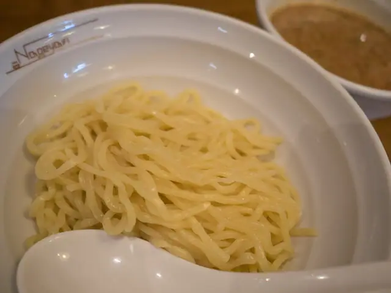

Japan / Gifu / Kakamigahara
Kakamigahara · Gifu
Kakamigahara
Highlighted on the Gifu map.
Kakamigahara City Hall

Places to eat · Places to stay
Nearby in Gifu: ← Kaizu · Kani →
Other towns: Anpachi · Ena · Gero · Gifu · Ginan · Godo · Gujo · Hashima · Hichiso · Hida · Higashishirakawa · Ibigawa · Ikedacho · Kaizu · Kani · Kasamatsu · Kawabe · Kitagata · Mino · Minokamo · Mitake · Mizuho · Mizunami · Motosu · Nakatsugawa · Ogaki · Onocho · Sakahogi · Seki · Sekigahara · Shirakawa · Shirakawamura · Tajimi · Takayama · Tarui · Toki · Tomika · Wanouchi · Yamagata · Yaotsu · Yoro
All towns in Gifu · Back to all prefectures